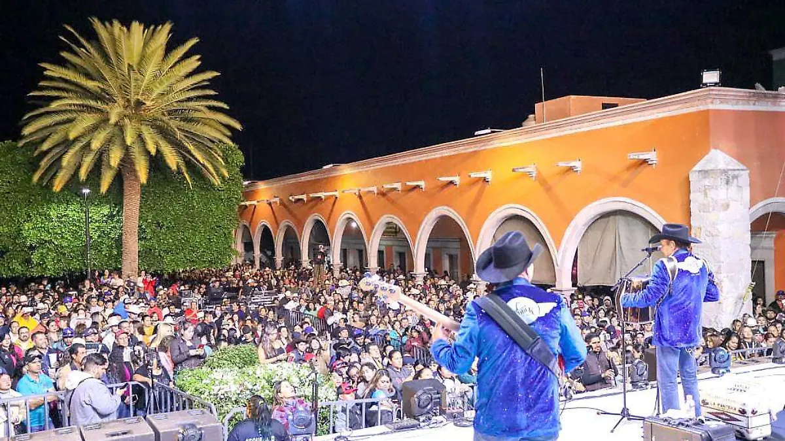
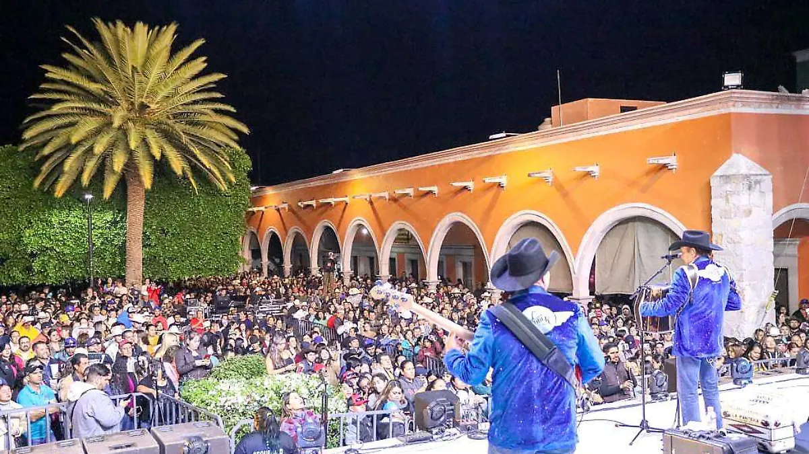

Calvillo, Pueblo Mágico, es conocido en toda la región y en gran parte del país como la “Capital de la Guayaba”. Este título lo ha ganado gracias a su extraordinaria producción de guayaba, fruto que no solo impulsa la economía local, sino que también forma parte esencial de la identidad cultural del municipio.
Después de la Guerra Cristera, el cultivo de la guayaba tomó gran fuerza en el municipio. Gracias a su microclima cálido y a los suelos fértiles del valle, Calvillo logró desarrollar uno de los cultivos más prósperos del estado. Estas condiciones naturales permitieron que la producción de guayaba creciera de manera constante, consolidándose como la principal actividad agrícola y comercial de la región.
Con el paso del tiempo, la guayaba transformó a Calvillo en uno de los municipios más importantes y productivos de Aguascalientes. Hoy, la economía local depende en gran medida de este cultivo, del procesamiento de la fruta y de la elaboración de productos derivados. Todo esto ha contribuido a que Calvillo sea un destino turístico atractivo y vibrante, ideal para quienes buscan naturaleza, tradición y sabores únicos.


 
